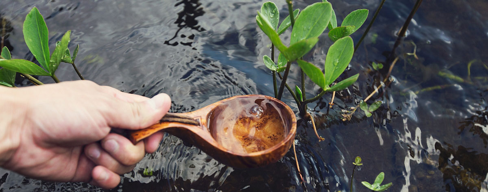

Gospodarka wodna wokół domu
Kompleksowo wykonujemy przydomowe oczyszczalnie ścieków oraz instalacje zagospodarowania deszczówki.

Zagospodarowanie deszczówki
Systemy zagospodarowania wody deszczowej umożliwiają magazynowanie, a następnie używanie wody do podlewania trawnika w okresie od wiosny do jesieni. Oprócz tego wodę tę można wykorzystywać do innych celów, takich jak mycie samochodu, prace porządkowe wokół domu itp. Do podlewania trawnika można wykorzystać zarówno zraszacze wchodzące w skład systemu automatycznego nawadniania, jak i standardowe węże ogrodowe.
Jak to działa?
Woda jest doprowadzana z rynny przez rurę spustową, a następnie rurami ułożonymi pod ziemią do podziemnego zbiornika. Dalej na filtrze zainstalowanym w rurze wznoszącej zbiornika odbywa się mechaniczne oczyszczanie z zabrudzeń i czysta woda spływa do zbiornika. Nadmiar wody, który może okresowo dopływać do zbiornika, odpływa przez otwór przelewowy poza zbiornik. Zbiorniki ustawia się na podstawce (okrągłe) lub bezpośrednio na gruncie i podłącza zestawem połączeniowym ze zbieraczem wody lub filtrem montowanym na rurze spustowej.
Technologia
Zbiorniki wykonane są z przyjaznego środowisku, wytrzymałego i odpornego na promieniowanie UV polietylenu. Każdy z nich wyposażony jest w plastikowy kran, umożliwiający napełnianie konewki wodą, a te zbiorniki, które ustawiane są bezpośrednio na gruncie (bez podstawki) posiadają również pobór dolny, do którego można, za pomocą szybkozłączki, podłączyć wąż w celu wykorzystania deszczówki.
Systemy ogrodowe obejmują: kompletny zbiornik wyposażony w filtr i otwór przelewowy, zatapialną jednofazową pompę wielostopniową, zamocowaną w zbiorniku i zakończoną poborem z sitkiem i pływakiem, oraz niezależną od zbiornika skrzynkę ogrodową.
Zbiorniki retencyjne
Nasza firma zajmuje się sprzedażą oraz montażem zarówno zbiorników retencyjnych naziemnych, jak i wkopywanych w ziemię. Umożliwiają one gromadzenie wody do celów nawodnieniowych zapewniając utrzymanie odpowiedniej jej rezerwy.
Zbiorniki naziemne z blachy falistej - szkielet zbiornika stanowią skręcone ze sobą płyty z blachy falistej, natomiast jego szczelność zapewnia umieszczony wewnątrz wkład zabezpieczony poliestrową wyściółką. Zbiornik można dodatkowo wyposażyć w pokrywę antyglonową zakrywającą zbiornik od góry. Doprowadzenie i odprowadzenie wody ze zbiornika odbywa się rurami wchodzącymi do środka pond jego górną krawędzią.
Zbiorniki podziemne - ponujemy zbiorniki polietylenowe o pojemnościach 3000, 4500, 6000, 9000 i 12000 m3. Charakteryzują się one solidnym wykonaniem, niską wagą oraz użebrowaniem pozwalającym zakopać je w gruncie nawet przy złych warunkach wodno gruntowych. Ponadto, dzięki teleskopowej przedłużce można w łatwy sposób dopasować wysokość pokrywy do wysokości terenu, niezależnie od głębokości posadowienia zbiornika.
Oczka wodne, kaskady, strumienie
Dzięki zastosowaniu w projekcie takich materiałów izolacyjnych jak folia PVC czy membrana EPDM, możemy nadać zbiornikowi dowolny kształt i rozmiar. Nawet na ogrodach o niewielkim nachyleniu lub płaskich jesteśmy w stanie stworzyć i wykonać projekty kaskad i strumyków . Duże ogrody o naturalnym spadku terenu dają możliwość stworzenia efektownego strumienia, naśladującego górską przyrodę.